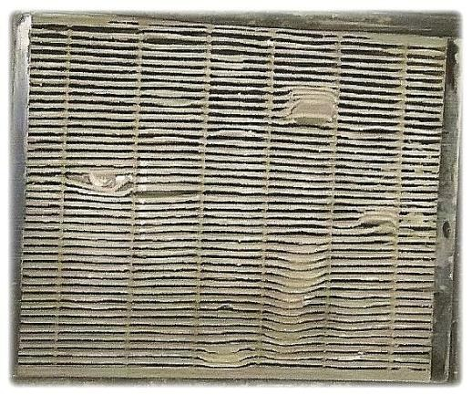
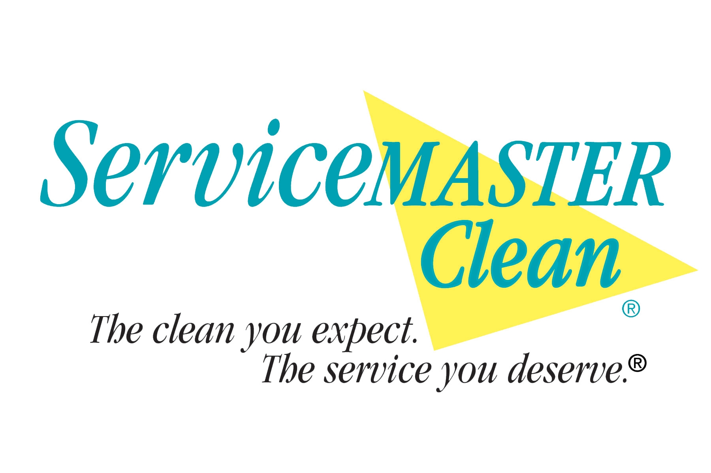
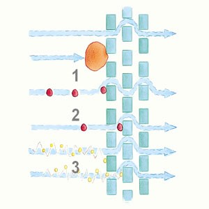
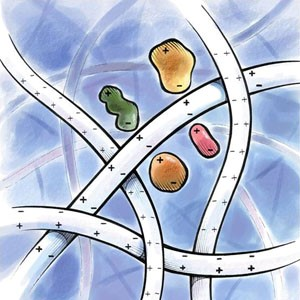
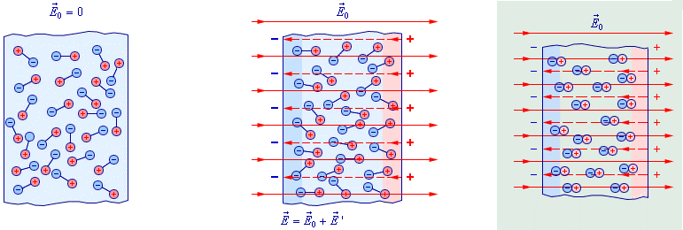
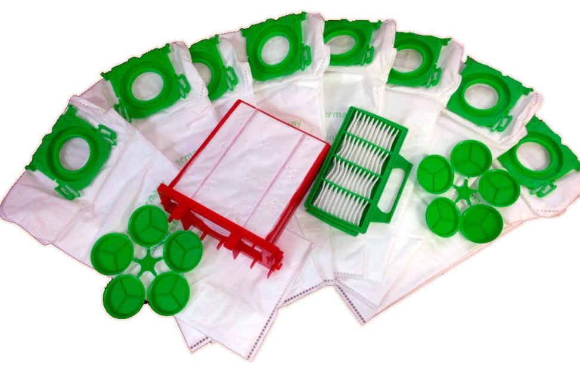

Технология фильтрации ElectroBag
Бумажный HEPA фильтр

Какими свойствами обладает бумага? Бумага легко намокает, при этом многократно теряет прочность и неравномерно уменьшается в размере в месте намокания (коробится). Бумажный HEPA нельзя мыть водой. После первой же промывки водой фильтр уменьшает фильтрующую способность так, как целлюлозные волокна под действием воды разбухают и теряют свою структуру. Мало того, его просушить достаточно сложно. А при наличии влаги на фильтре неизбежно появление плесени - сильнейшего аллергена. Отсюда вывод – бумажных, моющихся фильтров не бывает.
Эффективность HEPA фильтров
HEPA фильтры максимально эффективны в самом начале работы. По мере загрязнения фильтра эффективность очистки существенно уменьшается. Когда забиваются все поры, пыль идет в обход фильтра, загрязняя тем самым помещение.
Особенности пылесосов BORK 7-й серии
ElectroBag - система сбора пыли.
Потребителям нелегко оценить системы фильтрации пылесоса. Это приводит к неопределенности при его выборе. Компания BORK поставила перед собой задачу найти эффективную фильтрационную систему с длительным сроком службы.
Еще в начале 80-х годов, три крупные компании совместно разработали материал, который соответствовал строгим стандартам и нормам очистки. Этим компаниями были:
1. Компания ЗМ (с 1902 г.) - динамично развивающаяся многопрофильная международная корпорация с вековой историей и многолетними традициями. Компания производит тысячи уникальных продуктов и занимает лидирующие позиции во многих сферах производства: от материалов для здравоохранения до товаров для дома и офиса.
2. Freudenberg Gruppe (с 1849 г.) предлагает индивидуальные, инновационные технологические продукты и услуги для клиентов в различных областях промышленности. Клиентами Группы компаний также являются гражданская авиация, железнодорожные транспортные средства, медицинская и полупроводниковая отрасли.
Freudenberg разрабатывает и производит уплотнения, фильтры, нетканые материалы для медицинской техники.
3. Компания ServiceMaster Clean (с 1929 г.), одна из крупнейших клининговых компаний США в секторе медицинских учреждений.
Новый материал стал основой для создания нового типа пылесборника, названного ElectroBag, и фильтра Hospital-Grade-Miсrofilter, которыми сейчас комплектуются все пылесосы BORK 7-ой серии.

В отличие от обычных фильтров, фильтрация проходит не по механическому принципу (забивая поры фильтра), а по принципу электростатики; заряженные микроволокна фильтра притягивают пылевые частицы. Это придает фильтру открытую структуру, которая легко пропускает поток воздуха и одновременно уменьшает вероятность засорения.
Иными словами, при работе с ElectroBag пыль стремится задержаться на волокнах материала, а при работе с классическим пылесборником, пыль пролетает между волокнами, забивая поры фильтра.
ElectroBag - система сбора пыли, совмещающая в себе плюсы мешковых и контейнерных пылесосов. С одной стороны - высокая мощность всасывания, низкий уровень шума и гигиеничность в работе; с другой стороны – долгий срок службы фильтров, без значительных потерь силы всасывания.
Пылесборник BORK
Для производства мешков и фильтров используется синтетический диэлектрик (полипропилен), поляризация которого осуществляется в высоковольтном поле.
3 слоя электростатического фильтра, использующихся в мешках, электростатический моторный фильтр, после которого воздух выходит полностью очищенный и выпускной электростатический фильтр, удерживающий графитовую пыль со щеток двигателя, обеспечивают фильтрацию S-класса*.
При размерах пыли от 0,3 до 10 микрон фильтрация составляет 99,9991%.
*Фильтрация S-класса обеспечивает эффективность фильтрации 99.9% и более (по норме DIN 24184: задержка частиц более 0.3 микрон).

Пылесборник BORK – высокоэффективный 3-х слойный пылесборник, специально разработанный как для людей, страдающих от аллергии, так и для тех, кто предъявляет повышенные требования к гигиене.
При удалении из пылесоса герметично закрывается специальной крышкой.
Производится в Германии
Главная особенность электростатической системы в продолжительном сроке эффективной фильтрации.
Также продолжительный срок службы пылесборника обеспечивает его особая форма, расположение и распределение воздушного потока в пылесосе.
Рекомендуется регулярно менять фильтры по мере загрязнения, как минимум, после использования 16 пылесборников.